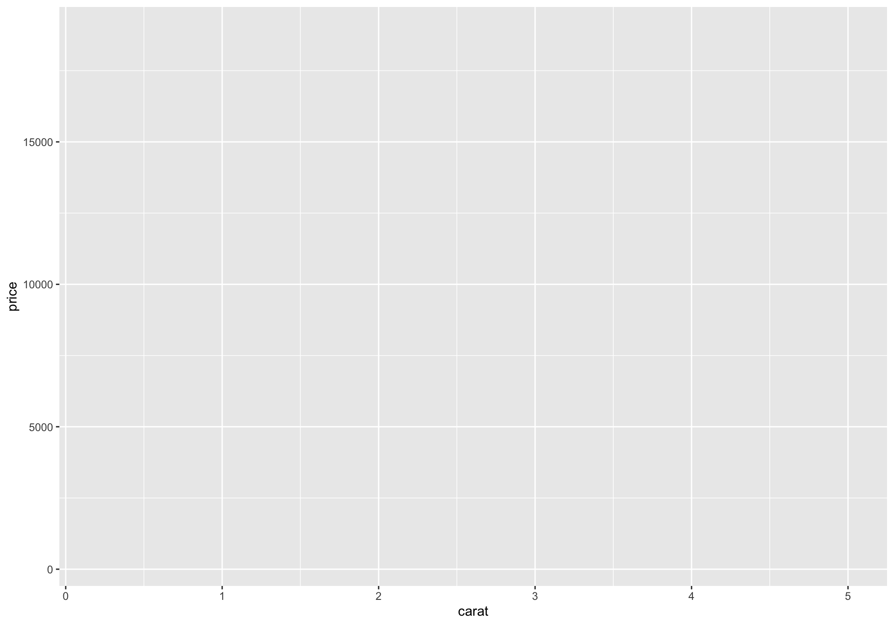
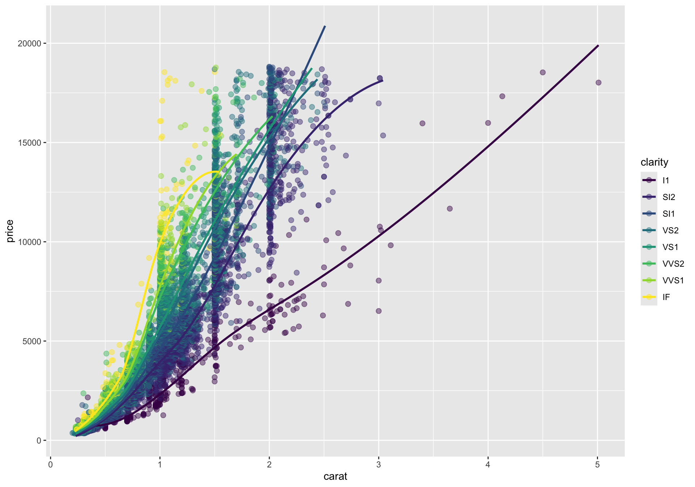
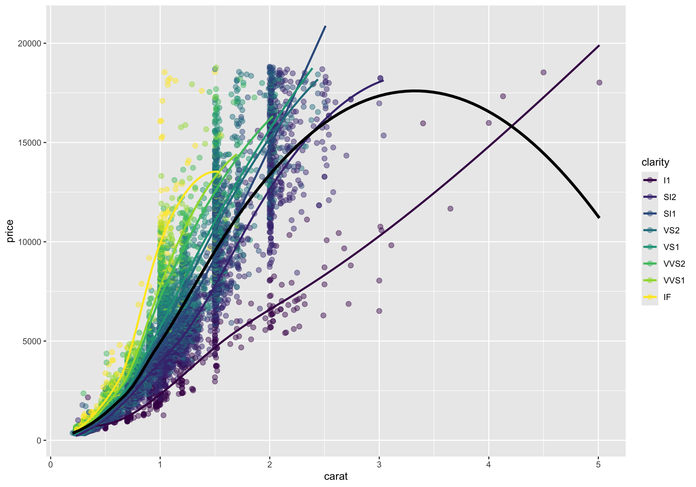
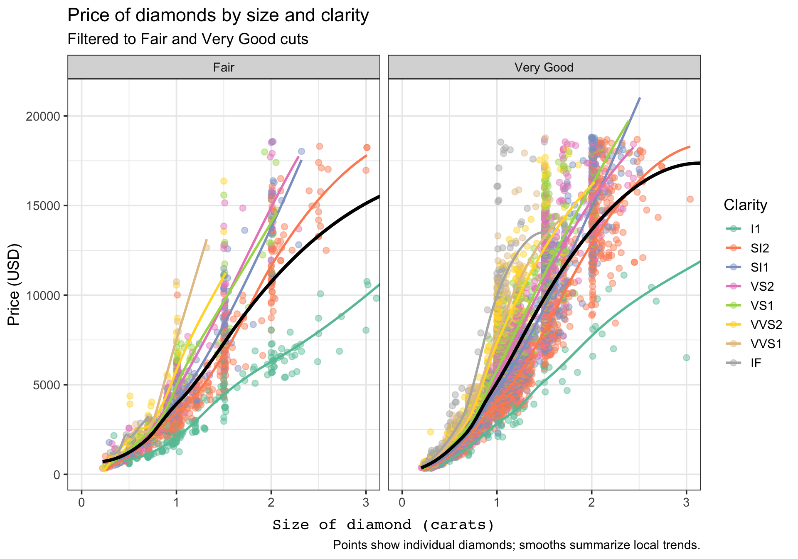

In many software packages, each graph type has its own interface: one function for histograms, another for scatterplots, another for boxplots, and so on. The week 9 slides frame ggplot2 differently: it uses a grammar of graphics, which means plots are assembled from reusable components rather than treated as unrelated chart types.
The practical idea is simple: a ggplot object grows by layers. Across those layers, we specify data, aesthetic mappings, graphical marks, statistical summaries, facets, scales, coordinates, and themes. In this walkthrough, we will build one plot step by step so you can see what each part contributes.
Learning goals
After working through this document, you should be able to:
Explain why ggplot2 is described as a plotting grammar.
Distinguish between data, aesthetic mappings, geoms, and stats.
Read a layered ggplot call as a sequence of design decisions.
Add helpful diagnostic or annotation layers without rewriting the whole plot.
Modify facets, scales, coordinates, labels, and themes without rewriting the whole plot.
Data for the example
We will use the built-in diamonds dataset from ggplot2, restricting the example to two cut levels so the later faceted display stays readable.
Every ggplot object begins with a dataset. At this stage, the object knows what data are available, but it does not yet know which variables belong on the axes or what kind of marks should be drawn.
Code
g_base <-ggplot(data = diamonds_small)g_base
This blank result is useful pedagogically: it shows that a plot object can exist before anything is visible on the page.
Add aesthetic mappings
The next step is to map variables to visual channels. Here, carat goes on the x-axis, price goes on the y-axis, and clarity is mapped to color. As discussed in close, aesthetic mappings describe how variables should appear visually, but they still do not draw any marks on their own.
Code
g_mapped <-ggplot( diamonds_small,aes(x = carat, y = price, color = clarity))g_mapped

At this point, the plot has structure but still no points, lines, or bars. We have told ggplot2 how to interpret the variables, not yet how to display them.
Add a geometric layer
Now we add a geom. A geom draws a direct representation of the data. For continuous x and y variables, geom_point() is the standard first choice because each row becomes a point in the plane.
This is the first truly informative plot. The global mapping is inherited by the point layer, so each observation is placed by carat and price, and colored by clarity.
Add a rug layer to show marginal densities
When many points overlap, it can be hard to see where observations are most concentrated along the x- or y-axis. A rug plot adds small tick marks to the plot margins, giving a compact view of the marginal distributions.
This does not replace a histogram or density plot, but it is a quick way to show where the data pile up near the plot boundaries while keeping the scatterplot intact.
Mapped versus fixed aesthetics
One subtle but important distinction is whether an aesthetic is mapped to a variable inside aes() or fixed at a constant value outside aes(). Inside aes(), the value comes from the data. Outside aes(), the value is just a styling decision.
This version still plots the same observations, but color is no longer data-driven.
Add a statistical layer
Distinguish between geom_* functions and stat_* functions. A useful rule of thumb is:
Use geom_* when you want to draw the observed data directly.
Use stat_* when you want a summary or transformation of the data.
Here we keep the points and add a smooth trend for each clarity group.
Code
g_smooth_by_clarity <- g_points +stat_smooth(method ="loess", se =FALSE, linewidth =1)g_smooth_by_clarity

Because the global color mapping is still active, stat_smooth() computes and draws a separate smooth within each clarity level.
Override mappings in a single layer
Layers do not have to use exactly the same mappings. In the next plot, the colored smooths remain, but we also add one overall trend line in black by overriding the inherited color and grouping.
Code
g_smooth_with_overall <- g_points +stat_smooth(method ="loess", se =FALSE, linewidth =1) +stat_smooth(aes(group =1, color =NULL),method ="loess",se =FALSE,linewidth =1.4,color ="black" )g_smooth_with_overall

This is a good example of how layers combine. The point layer shows the raw data, the colored smooths summarize within-group trends, and the black smooth summarizes the full dataset.
Split the display with facets
Faceting creates small multiples. Instead of putting both cut categories into one panel, we can split the display into separate panels that share the same variable mappings.
Facets are especially helpful when overplotting makes a single panel hard to read or when you want side-by-side comparisons that preserve a common plotting template.
Adjust scales and coordinates
Scales control how data values are translated into aesthetics, while coordinates control how the plotted space is displayed. Here we do two things:
Change the color palette.
Zoom the x-axis to focus on diamonds below 3 carats.
Note that coord_cartesian(xlim=) limits the data displayed along the x axis, but any statistical summaries computed by ggplot are still computed on the full dataset.
Here, that means that the nonlinear regression lines are fit based on diamonds > 3 carats. Conversely, if we use xlim() directly, like + xlim(c(0,3)), ggplot subsets the data to that interval before any calculations/statistical transformations.
Add theme elements
Themes control non-data ink: fonts, grid lines, backgrounds, spacing, and other display choices. We should distinguish between overall theme functions such as theme_bw() and the more specific theme() function for fine tuning.
The data layers are unchanged. We are only modifying how the plot looks, not what it says.
Add labels and a caption
The last layer of polish is annotation. labs() lets us name the plot, axes, legend, and caption without changing the underlying data layers.
Code
g_final <- g_themed +labs(title ="Price of diamonds by size and clarity",subtitle ="Filtered to Fair and Very Good cuts",x ="Size of diamond (carats)",y ="Price (USD)",color ="Clarity",caption ="Points show individual diamonds; smooths summarize local trends." )g_final

At this point, the same base plot has become much easier to interpret because the labels tell the viewer what to attend to.
Add an annotation layer
Annotations are also layers. The annotate() function is useful when you want to draw attention to a notable region or pattern without creating a separate data frame just for one note.
Here the annotation becomes one more layer in the ggplot object. It does not change the scales, geoms, or statistics; it simply adds an interpretive cue for the reader.
Inspect the completed ggplot object
One advantage of the grammar approach is that the plot remains an object with parts you can inspect. The tibble below summarizes the layers that make up the finished plot.
A ggplot is not a single opaque chart command. It is a structured object that is assembled from layers, and each layer contributes a specific part of the final display.
Take-home summary
When reading or writing ggplot2 code, try to parse it in this order:
What data are being used?
Which variables are mapped to which aesthetics?
Which geoms or stats are being added?
Are facets, scales, or coordinates changing the structure of the display?
Which theme and label choices improve readability?
If you can answer those five questions, you can usually understand a ggplot object quickly and modify it confidently.